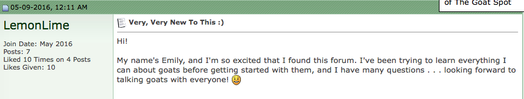

This a site containing five of the strangest and potentially most obscure forums I've ever found. Please don't judge me for finding these - you'll find that once you get past the oddities and potentially creepy seeming users, these communities are really quite loveable and dealing with some relateable situations. Be warned, it's about to get weird.
The Introduction page of The Goat Spot is a place where newcomers can come and introduce themselves. It features some adorably naive subject lines such as "Very, Very New To This :)" and "New to the world of goats." There are also some great usernames: "groovylady," "happybleats," "luvmyherd" - there's some great content here .
